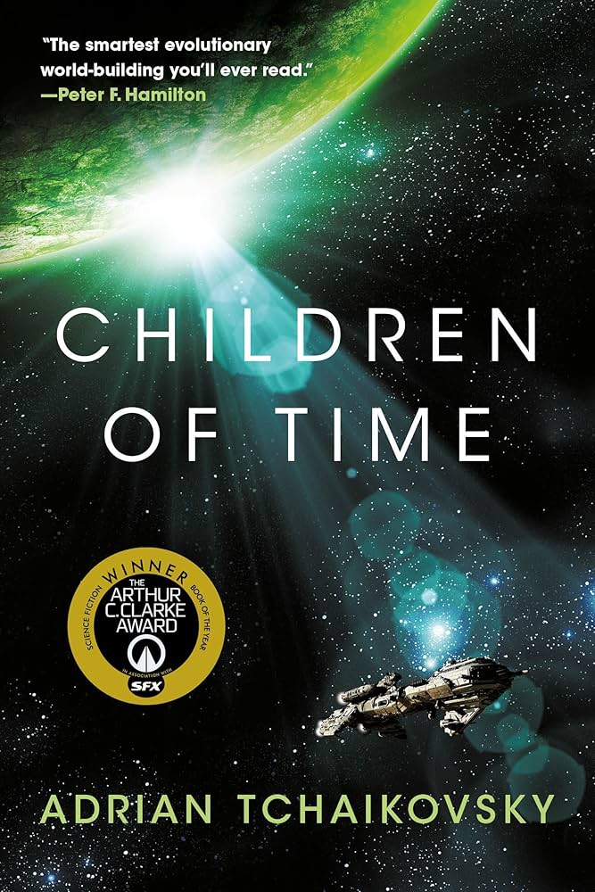
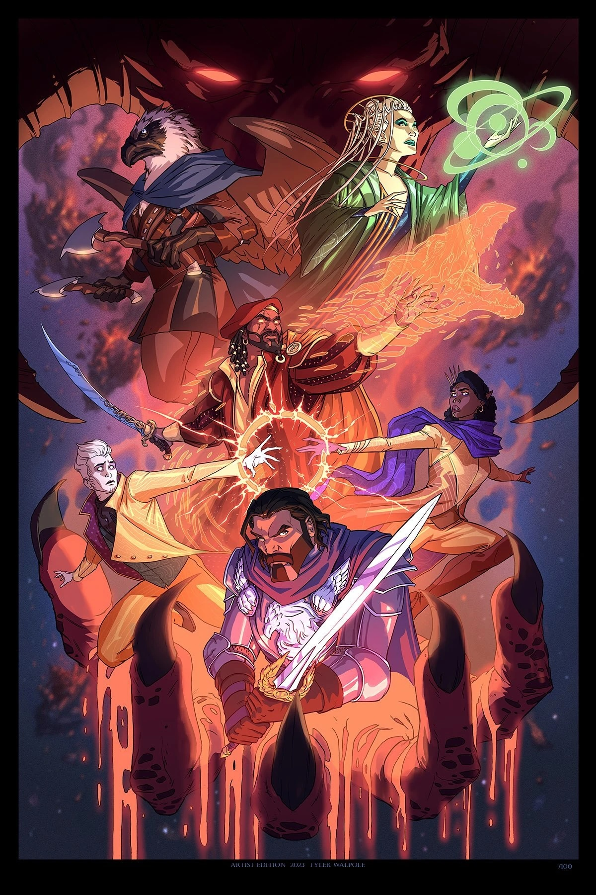
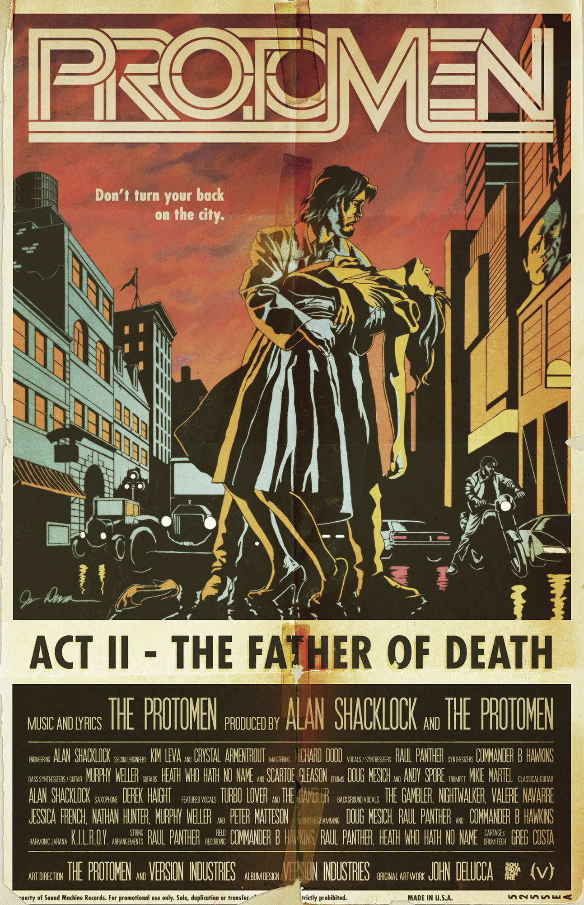

Outer Wilds
game
A game where you explore an alien solar system and uncover secrets.

Children of Time
book
A book about hyperintelligent Spiders and the future of humanity.

The Last of Us Part 2
game
A game about the cycle of grief, revenge, and forgiveness.

Critical Role: EXU Calamity
show
I like a lot of things that Critical Role has done, but this is far and away my favorite. Some of the best storytelling I've ever seen, and its mostly improvised.

The Protomen
band
Really good band.